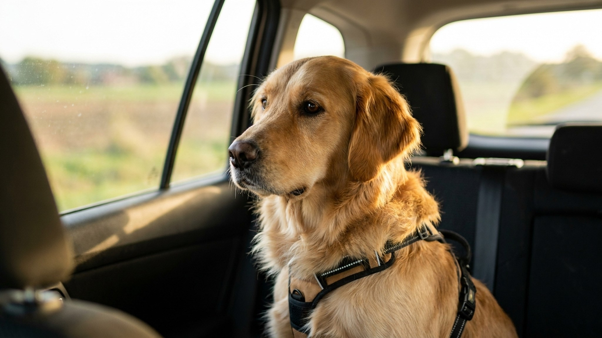

Поездка с собакой в машине: безопасность, укачивание, правила 2026

27 мая 2026 · 9 минут чтения · Безопасность · Путешествия · Собаки
Каждые майские и летние выходные миллионы российских семей едут на дачу — и берут собак. Большинство везут питомцев свободно на заднем сиденье или в багажнике без фиксации. Это не только опасно для собаки при торможении (незафиксированная собака 20 кг при ударе 50 км/ч создаёт нагрузку 1 000 кг), но и нарушение ПДД. Рассказываем, как ехать правильно, безопасно и чтобы собака не страдала в дороге.
🐾 Дневник здоровья питомца — в кармане
Вес, прививки, симптомы и напоминания в одном приложении. AnimaLife следит за здоровьем питомца вместо вас.
Завести дневник → Открыть в MAX →
Что говорит закон: ПДД и ответственность
По ПДД РФ (п. 22.9) животное при перевозке в автомобиле относится к «грузу». Перевозчик обязан обеспечить безопасность груза. На практике это означает: собака должна быть зафиксирована так, чтобы не создавать помех водителю и не стать снарядом при ударе. При проверке ГИБДД формальная ответственность за незафиксированное животное — штраф по ст. 12.21 КоАП (нарушение правил перевозки грузов, до 500 руб.). Однако при ДТП страховые компании могут отказать в выплате, если незафиксированное животное было признано причиной аварии.
Важнее закона — физика. При столкновении на скорости 50 км/ч незафиксированная собака весом 30 кг создаёт ударную силу около 1 500 кг. Это смертельно — и для собаки, и для пассажиров.
Способы фиксации: сравнение вариантов
Автомобильный ремень-карабин (crash-tested harness)
- Шлейка, сертифицированная по стандарту краш-теста (ищите маркировку «crash tested» или тест по стандарту FIA 8853-2016).
- Карабин пристёгивается к штатному ремню безопасности через адаптер или напрямую.
- Плюсы: собака относительно свободна, видит дорогу, меньше тревога. Минусы: только сертифицированная шлейка даёт реальную защиту — обычная при рывке разорвётся или сломает позвонки.
- Рекомендованные модели 2026: Ruffwear Load Up, Kurgo Tru-Fit (сертифицированы Center for Pet Safety США).
Автомобильная клетка / переноска
- Клетка, зафиксированная ремнями в багажнике или на заднем сиденье — наиболее безопасный вариант при ДТП.
- Металлическая клетка должна быть прикреплена к точкам крепления груза в багажнике — иначе сама становится снарядом.
- Лучший выбор для собак с высокой тревогой в авто: закрытое пространство снижает раздражители.
- Размер клетки: собака должна стоять, лежать и поворачиваться. Не больше — лишнее пространство увеличивает риск травмы при рывке.
Автогамак
- Растягивается между передними и задними сиденьями, перекрывает «нишу» для лап.
- Не фиксирует собаку — только не даёт упасть вперёд.
- Полноценной защитой при ДТП не является. Плюс — сохраняет обивку сиденья.
- Приемлемо для коротких поездок с небольшой собакой. Для серьёзных дистанций — комбинируйте с ремнём-карабином.
Укачивание у собак: почему и что делать
Кинетоз (укачивание) у собак встречается чаще, чем у людей. Особенно у щенков — до 1 года вестибулярный аппарат ещё развивается. У 17-20% взрослых собак кинетоз сохраняется на всю жизнь (данные Veterinary Record, 2023).
Признаки укачивания: слюнотечение, частое облизывание губ, зевота, рвота, малоподвижность, скуление.
Что помогает:
- Не кормить за 2-4 часа до поездки.
- Поддерживать прохладную температуру в салоне (не выше +20°C).
- Открыть окно на 3-4 см — свежий воздух снижает симптомы.
- Делать остановки каждые 1,5-2 часа, давать воду и выгуливать.
- Привыкание: начинать с коротких поездок 10-15 минут, постепенно удлинять.
- Препараты: Серения (маропитант, рецептурный ветпрепарат) — наиболее эффективное средство при тяжёлом кинетозе. Назначает ветеринар. Дименгидринат (аналог человеческого «Драмина») — применяется, но с меньшей доказательной базой для собак. Только по назначению врача с расчётом дозы по весу.
Тревога и страх в машине: как приучить собаку к поездкам
Часть собак боится самого автомобиля — не из-за укачивания, а из-за ассоциаций (машина = клиника, машина = громкий звук). Поведенческая коррекция здесь работает так же, как с любым страхом: десенситизация + положительное подкрепление.
- Шаг 1. Дайте собаке исследовать неподвижную машину на поводке. Лакомства внутри — заходить добровольно.
- Шаг 2. Включите двигатель — собака внутри, но машина стоит. Лакомства, игра, похвала.
- Шаг 3. Первая поездка — 5 минут до ближайшего пустыря, там активная прогулка. Машина = прогулка.
- Шаг 4. Постепенно увеличивайте длину поездок.
При тяжёлой тревоге (рвота, дрожь, неконтролируемое поведение даже на коротких дистанциях) — обсудите с ветеринарным поведенческим специалистом. Иногда требуется временная медикаментозная поддержка (габапентин, мелатонин — только по назначению).
Жара в машине: это убивает за 20 минут
В машине с закрытыми окнами при +25°C температура за 10 минут поднимается до +40°C, за 20 минут — до +55°C. Собака погибает от теплового удара. Не «становится плохо», а погибает.
Правила без исключений:
- Никогда не оставлять собаку в закрытой машине на солнце, даже «на пять минут».
- Припаркованная машина в тени остаётся опасной — она нагревается медленнее, но нагревается.
- Приоткрытые окна не решают проблему при высокой температуре воздуха.
- В дальних поездках кондиционер не должен выключаться, если собака остаётся в машине. Но это не повод уходить надолго — кондиционер может заглохнуть.
Что взять в дорогу: чек-лист
- Вода в пластиковой бутылке + походная миска (минимум 0,5 л на 50 км).
- Паспорт ветеринарный — если едете за границу или на охраняемый курорт.
- Антипаразитарная обработка (клещи, блохи) — до поездки за город.
- Лакомства для коротких остановок.
- Пакеты для уборки.
- Аптечка: перекись водорода 3%, хлоргексидин, бинт, пинцет для клещей, телефон ветеринара.
- Любимая игрушка или подстилка с запахом дома — снижает тревогу.
Частые ошибки при поездках с собакой
- Кормить прямо перед поездкой — риск рвоты, вздутия.
- Позволять собаке высовываться в окно — риск травмы глаз и ушей от встречного потока, риск выпасть при резком манёвре.
- Брать собаку на переднее сиденье — при срабатывании подушки безопасности — смертельно.
- Давать человеческие таблетки от укачивания без расчёта дозы по весу — токсичность у собак иная, чем у людей.
- Не делать остановок в длинных поездках — кровообращение в лапах нарушается, тревога накапливается.
← Все статьи · Открыть AnimaLife в Telegram · RSS
Читайте также: Тепловой удар у собаки летом · Паспорт питомца за 60 секунд